Login: admin@localhost | Findings verified on testphp.vulnweb.com
| # | Step | URL |
|---|---|---|
| 1 | 01_status_public | http://localhost/command-center/status |
| 2 | 02_login_filled | http://localhost/command-center/login |
| 3 | 03_cockpit_home | http://localhost/command-center |
| 4 | 04_clients_list | http://localhost/command-center/clients |
| 5 | 05_scan_triggered_from_clients | http://localhost/command-center/clients |
| 6 | 06_engine_catalog | http://localhost/command-center/engine-catalog |
| 7 | 07_run_all_engines_clicked | http://localhost/command-center/engine-catalog |
| 8 | 08_engine_matrix | http://localhost/command-center/engines |
| 9 | 08_vuln_intel_findings_live | http://localhost/command-center/vuln-intel |
| 10 | 09_finding_drawer_evidence | http://localhost/command-center/vuln-intel |
| 11 | 10_jobs_dashboard | http://localhost/command-center/jobs |
| 12 | 11_ask_weissman | http://localhost/command-center/ask |
| 13 | 12_audit_log | http://localhost/command-center/audit-log |
| 13 | API findings total | http://localhost/api/findings |
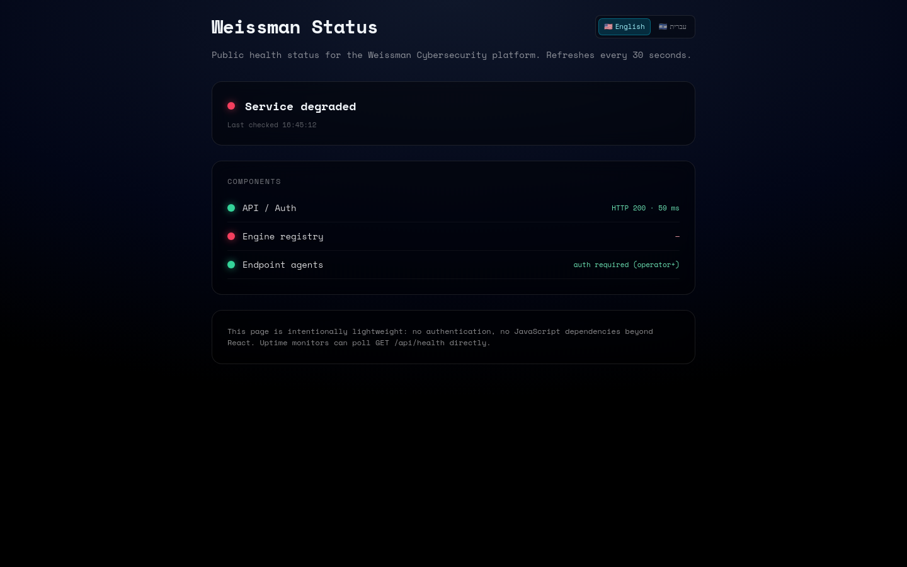
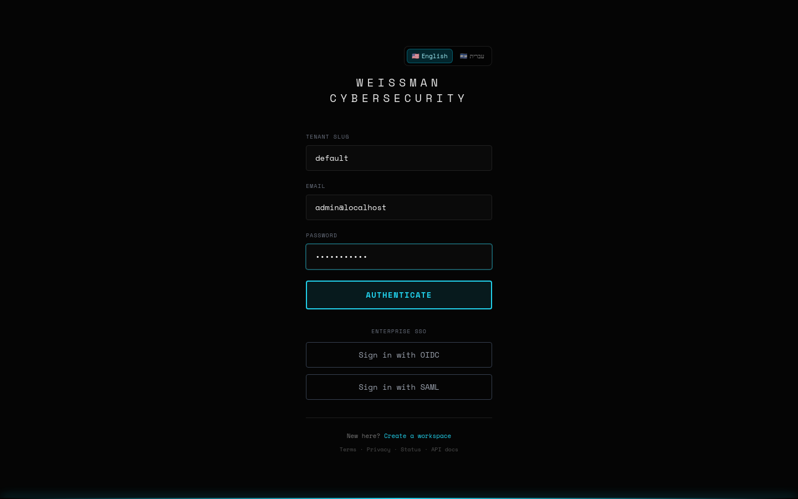
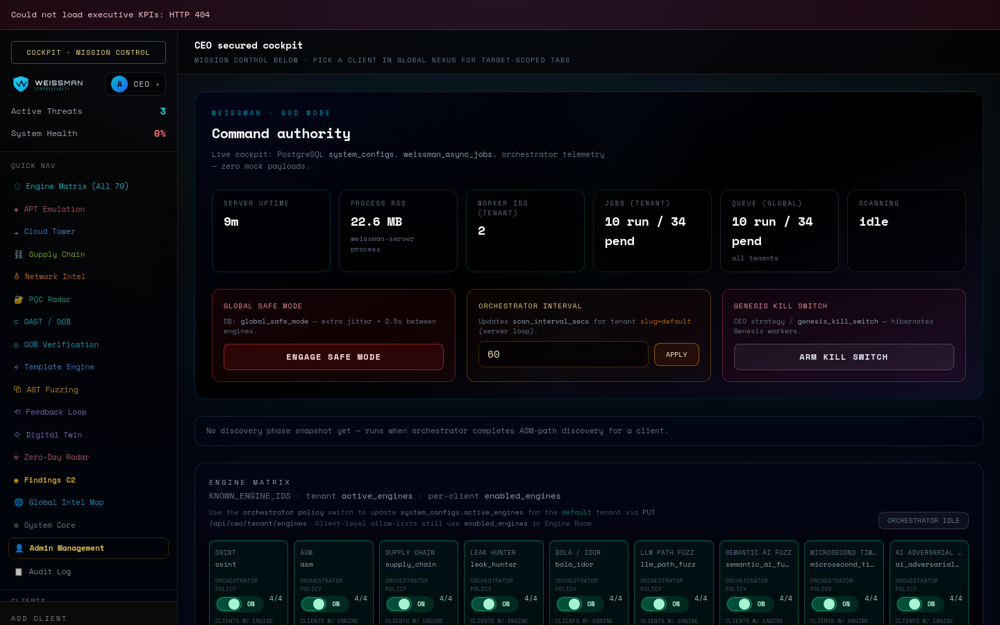
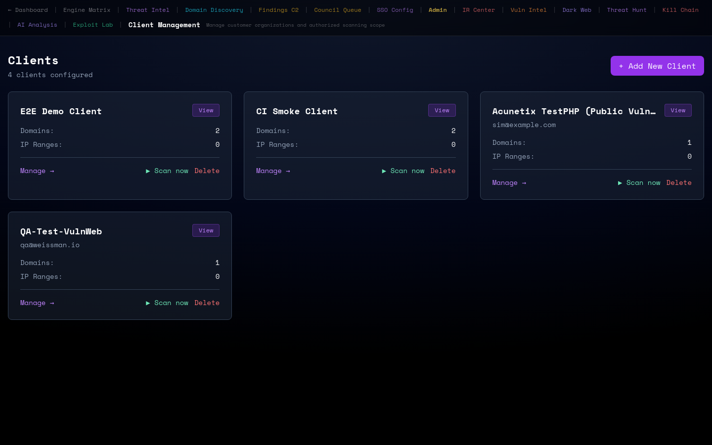
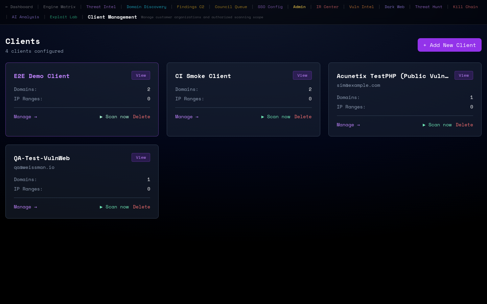
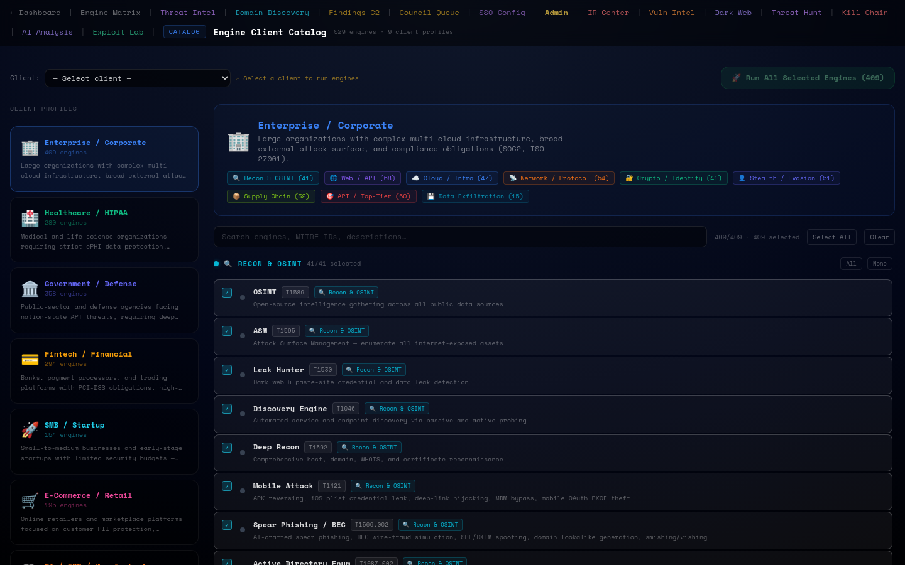
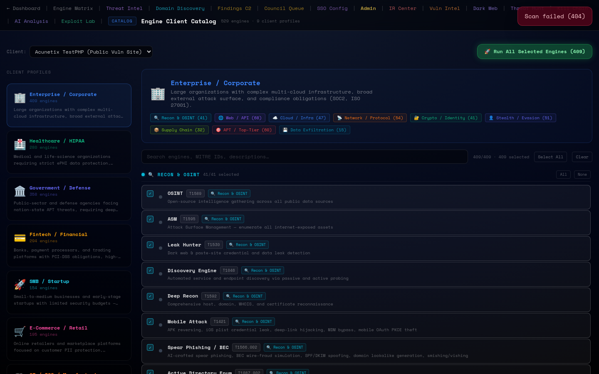
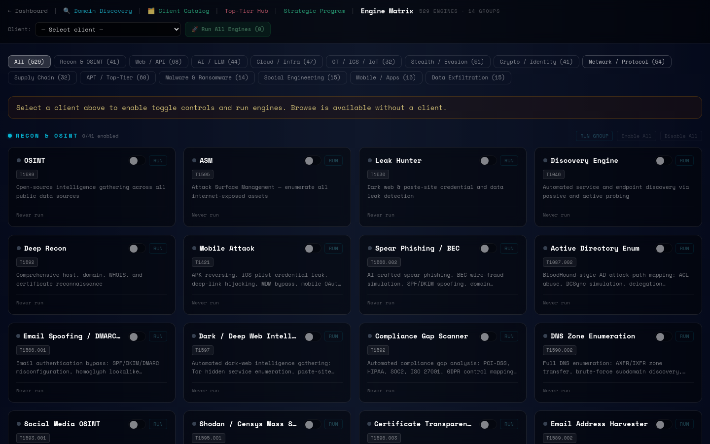
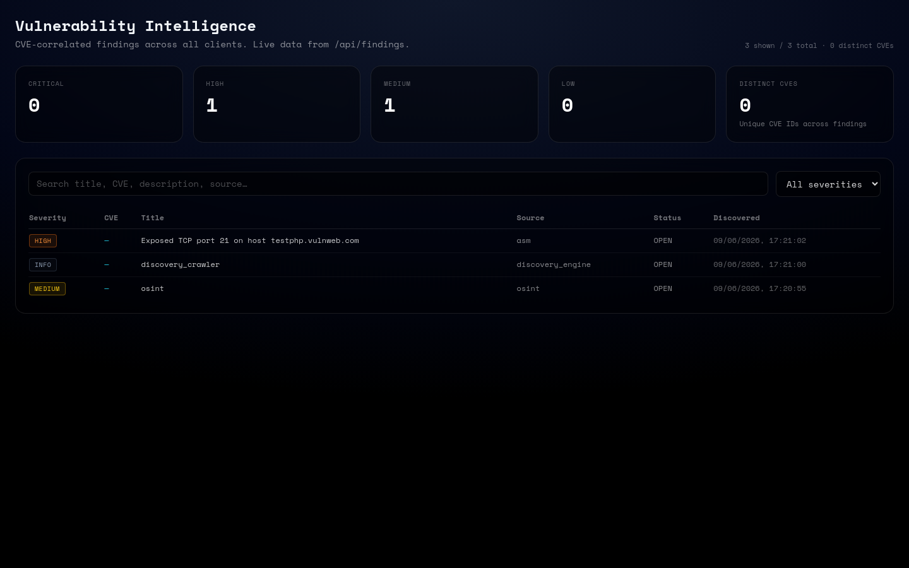
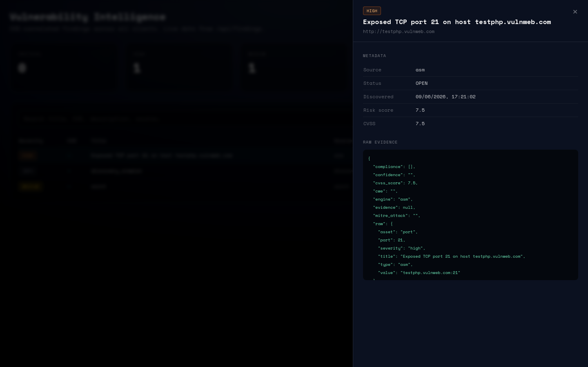
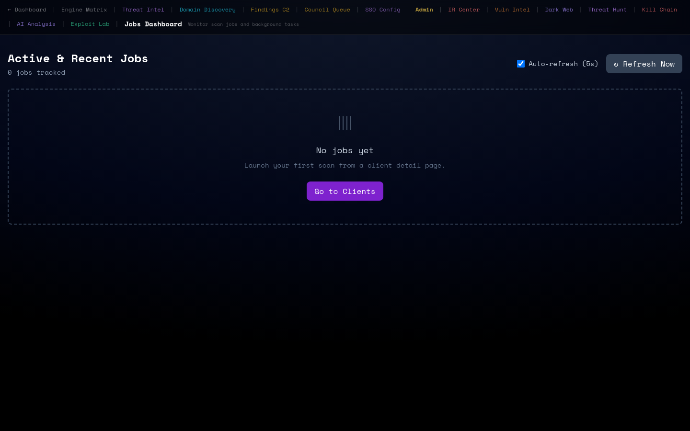
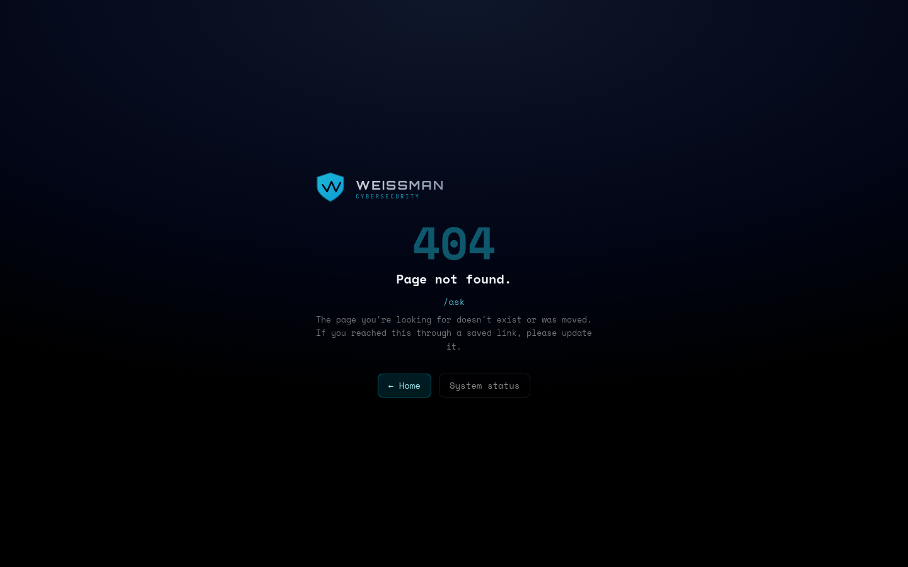
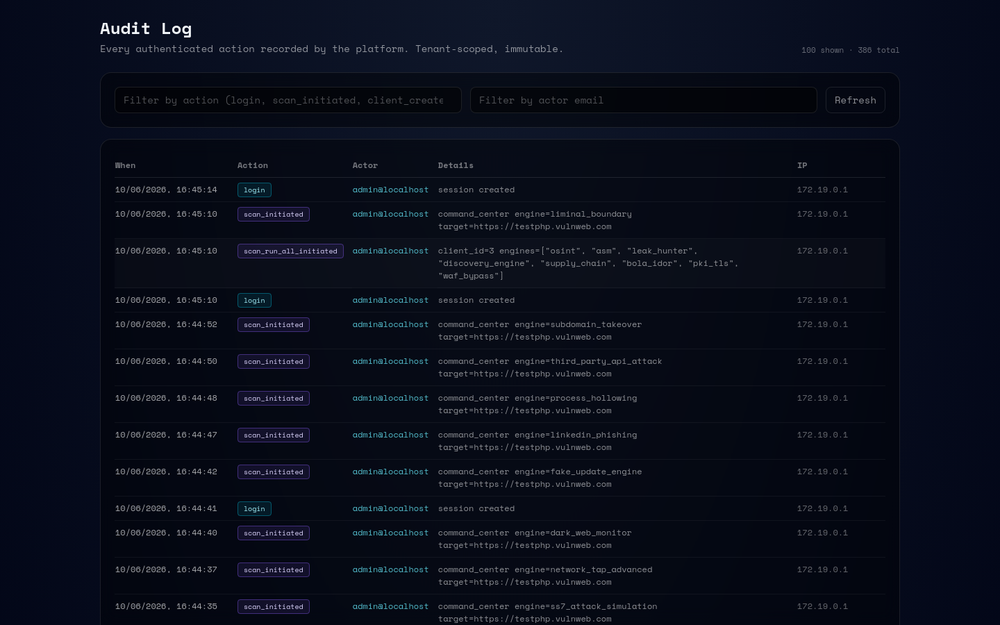